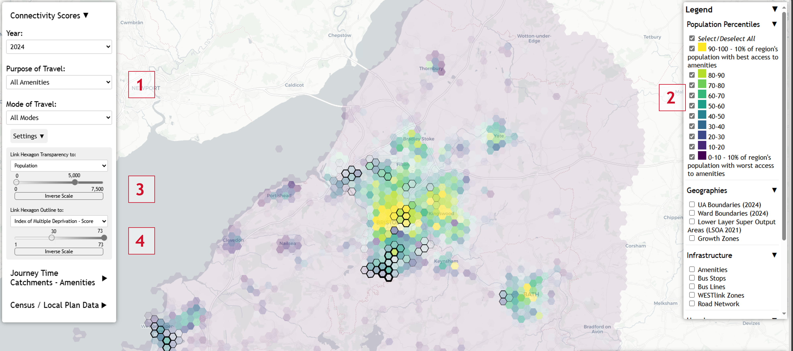
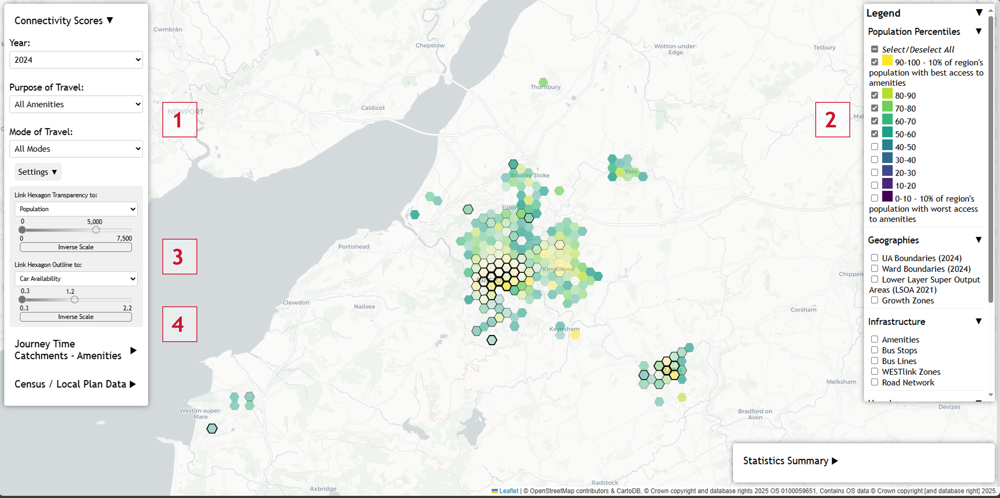
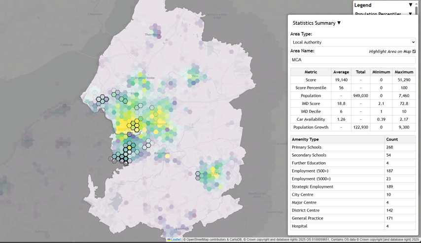
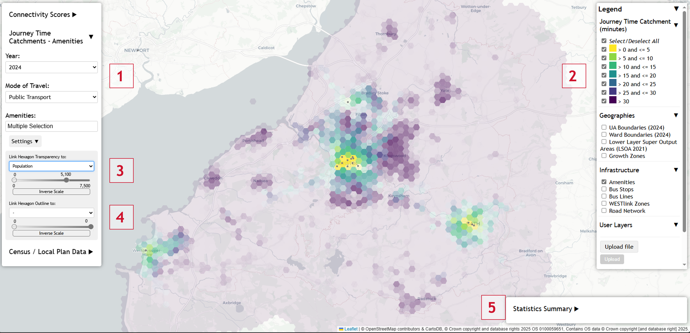
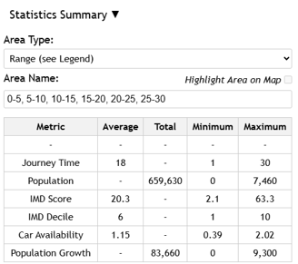
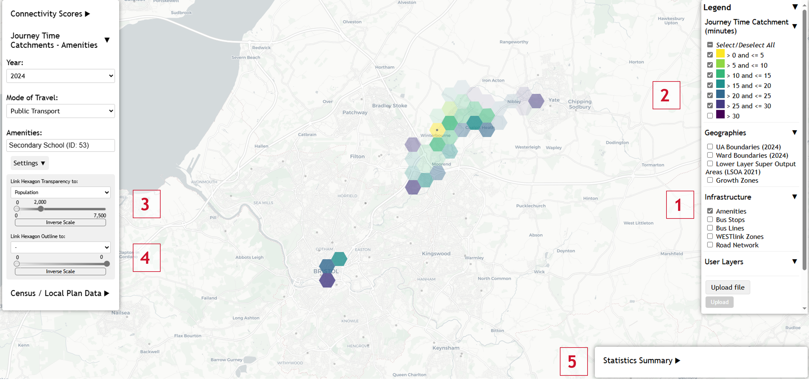
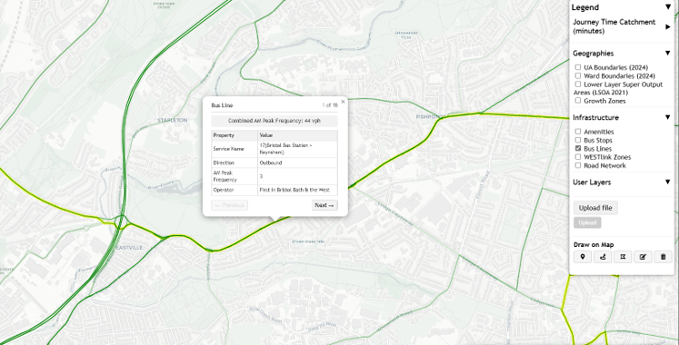
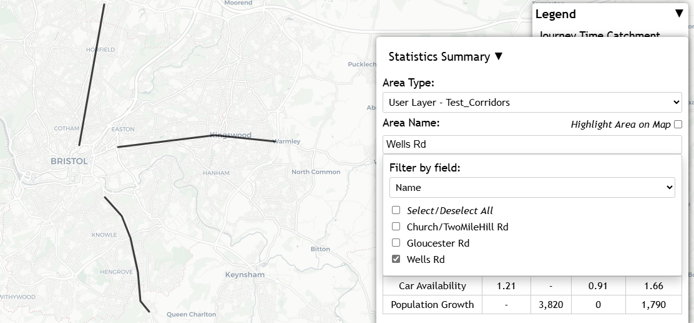
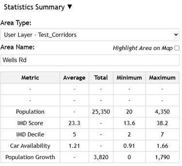

About This Tool
The West of England Connectivity Tool was developed to support strategic planning and policy-making around connectivity across the West of England Combined Authority region.
The tool enables users to:
- Visualize connectivity to key services and amenities
- Identify connectivity gaps and underserved areas
- Support evidence-based transport and land-use planning
- Engage stakeholders in connectivity discussions
This tool provides indicative analysis for planning and policy purposes. For specific travel planning or connectivity assessments, users should consult current transport schedules, service providers, and detailed local knowledge.
Versions
West of England (May 2025) is the current methodology used for connectivity score outputs in this tool, as it was developed following extensive consultation and review in 2021-2023.
Between December 2025 and July 2026, an interim scoring approach was used to test alignment with DfT methodology assumptions. After review, this approach was not retained and the tool reverted to the original West of England methodology.
DfT (June 2025) has been derived from the Department of Transport Connectivity tool. Output area level scores have been aggregated to the same grid as the West of England tool. Please refer to the official documentation for any further details.
Updates
The connectivity tool has been updated for multiple years (2019, 2022, 2023, 2024, 2025) to reflect changes in public transport networks and schedules (reflecting Q4 - October-December timetables). The amenities, and the road & active travel networks aren't updated.
Year-on-year comparisons are available to identify improvements or deteriorations in connectivity over time.
Limitations
- This tool assesses the potential for people to access amenities, it doesn't reflect people's actual behaviours.
- Travel times for public transport are based on scheduled services and may not reflect real-time conditions or service disruptions
- Travel times for cars are based on national average speeds per road type and do not account for congestion
- Travel times for walking and cycling are based on average speeds and do not account for terrain
- Public transport routes' frequencies and capacities aren't reflected in the scores
- Infrastructure quality isn't reflected in the scores
Glossary
Key Terms
Amenity Categories
Methodology
Overview
The West of England Connectivity Tool uses connectivity analysis to evaluate how easily residents can access essential services and amenities. This analysis considers multiple transport modes and time-based thresholds to determine connectivity levels.
Data Sources
- Transport Networks: Ordnance Survey road and public transit networks
- Amenity Locations: Geographic databases of schools, hospitals, employment centers, and other facilities, such as ONS, OS, NHS, and constituent local authorities.
- Socioeconomical datasets Census 2021 has been used for the majority of these datasets. Deprivation derives from MHCLG, and future population / employment growth derive from Local Plans.
Score Calculation Method
This section outlines the West of England connectivity score methodology used in the current tool.
Step 1: Travel Time Calculation
For each hexagonal origin point, the tool calculates travel times to the closest destinations for each amenity type using multiple transport modes (Walk, Cycle, Public Transport, Car). Travel times are sourced from two datasets:
- TRACC: Public Transport travel times based on timetables (Q4 - October-December schedule)
- Network Analyst: Industry standards of 4.8 km/h for walking and 16 km/h for cycling speeds, excluding rural roads and dual carriageway as a default. For cars, DfT's average speeds per road type are used.
For each origin-mode-amenity combination, only the closest 20 destinations are retained to reduce computational complexity.
Step 2: Score Calculation
For each destination, a weighted score contribution is calculated and then aggregated by origin.
- Service weights (from National Travel Survey): Schools 26.8, City Centres 38.6, Employment 29.9, Healthcare 4.7
- Mode weights: Walk 100, Cycle 75, PT 50, Car 1. The tool prioritizes sustainable and equitable transport modes by applying higher weights to walking, cycling, and public transport over private vehicle access.
- Threshold weight: Walk 2.0, Cycle 1.5, PT 1.1, Car 1.0. The threshold weights determine how quickly accessibility decreases with distance for each mode.
Step 3: Aggregation by Origin and Mode
Revised scores are aggregated by summing all destination scores for each origin-mode combination, creating a total accessibility score per transport mode.
Step 4: Purpose-Level Aggregation
Amenity types are grouped into strategic purposes:
- Education: Primary Schools, Secondary Schools, Further Education
- Employment: Employment sites (500+ jobs), Employment sites (5000+ jobs), Strategic Employment Sites
- Health: GPs, Hospitals
- High Street: City Centres, Major Centres, District Centres
- All Amenities: Aggregate of all above categories
For each purpose, scores are summed across all transport modes to create a total connectivity score.
Step 5: Population-Weighted Percentiles
Connectivity scores are converted to population-weighted percentiles (0-100) based on the distribution across the four local authorities (Bath & North East Somerset, Bristol, North Somerset, South Gloucestershire). This percentile ranking reflects how well-connected each hexagon is relative to the rest of the region, weighted by population distribution.
Examples
Connectivity Scores - Example 1

This example shows connectivity scores for 2024, all amenities, and all transport modes (1). The map styling is configured to highlight where people live and where deprivation is highest:
- Colour ramp: yellow shows the best-connected 10% of the population, purple the worst-connected 10%. (2)
- Transparency slider: based on population, so low/no-population hexagons are more faded. (3)
- Outline slider: based on IMD, so hexagons with higher deprivation scores have thicker outlines. (4)
Interpretation: where connectivity is low and population/deprivation are high, there may be a need for improved local amenity provision or better transport links to existing amenities further afield.
Connectivity Scores - Example 2

This example starts from the same 2024 score layer (1) but filters to stronger-performing score bands and changes styling to highlight places with potential growth opportunities:
- Lower score percentile ranges are unticked to focus on better-connected areas. (2)
- Transparency slider: based on inverse population, so lower-density places are more visible. (3)
- Outline slider: based on inverse car availability, so areas with lower car ownership are highlighted. (4)
Interpretation: places with low population density, low car ownership, and good connectivity may indicate opportunities for future growth with relatively limited additional community infrastructure investment.
Statistics Summary - Further Analysis

The Statistics Summary panel supports area-based analysis for Local Authorities, Wards, score ranges (colours), and custom areas (uploaded or drawn). For the selected area, the tool summarises:
- Average, highest, and lowest values for key metrics.
- Counts of amenity types located within that area.
Journey Time Catchment - Example 3

This example shows public transport journey time catchments to City Centres and Major Centres in 2024 (1):
- Colour ramp: yellow represents up to 5 minutes, purple represents over 30 minutes. (2)
- Transparency slider: based on population, highlighting higher-population places. (3)
- Outline slider: not used in this example. (4)

The Statistics Summary (5) can then be used to profile areas within selected catchments, such as places within 30 minutes by public transport.
Journey Time Catchment - Example 4

This example shows journey time catchments to an individual amenity (Winterbourne Academy, by public transport):
- Enable Amenities in the Infrastructure section of the legend. (1)
- Click the amenity and use Show Amenity Journey Time Catchment.
- Filter out the over-30-minute band to isolate the 30-minute catchment. (2)
- Use population-based transparency to emphasise where more residents are affected. (3)
- Outline slider: not used in this example. (4)
The Statistics Summary (5) can be used to examine the make-up of the area within the selected threshold.
Context

Additional boundaries (for example UA and wards) and infrastructure layers can be enabled from the legend panel. For bus layers, map clicks open a pop-up showing combined AM peak frequencies and individual services/frequencies at that location.
Adding Custom Elements

Users can upload custom layers (.kml and .geojson) or draw directly on the map (points, lines, polygons).

These custom features can then be used in Statistics Summary analysis to profile areas within or along proposed sites/corridors.